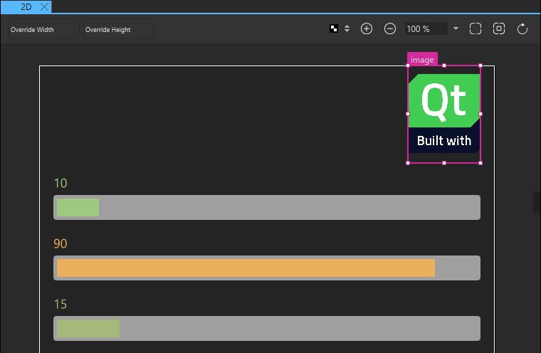
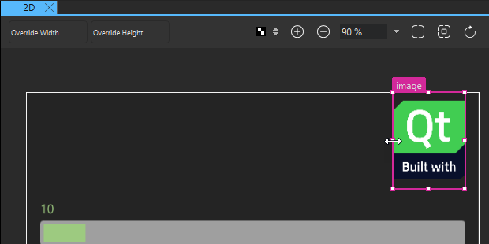
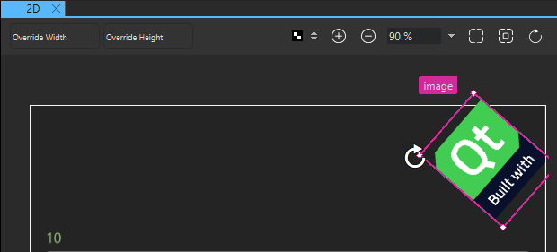
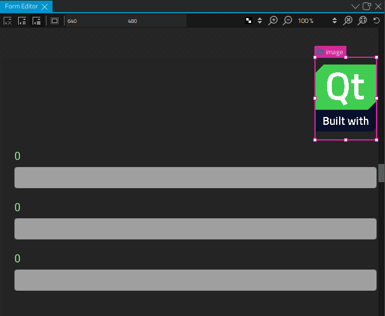
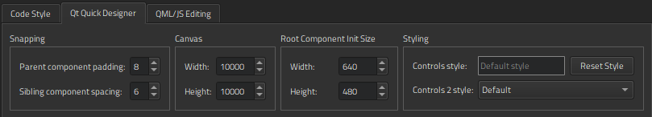
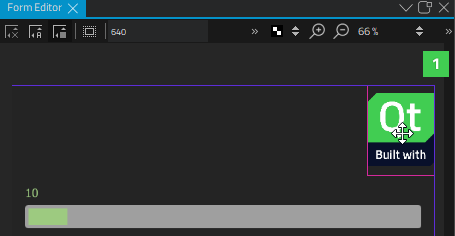
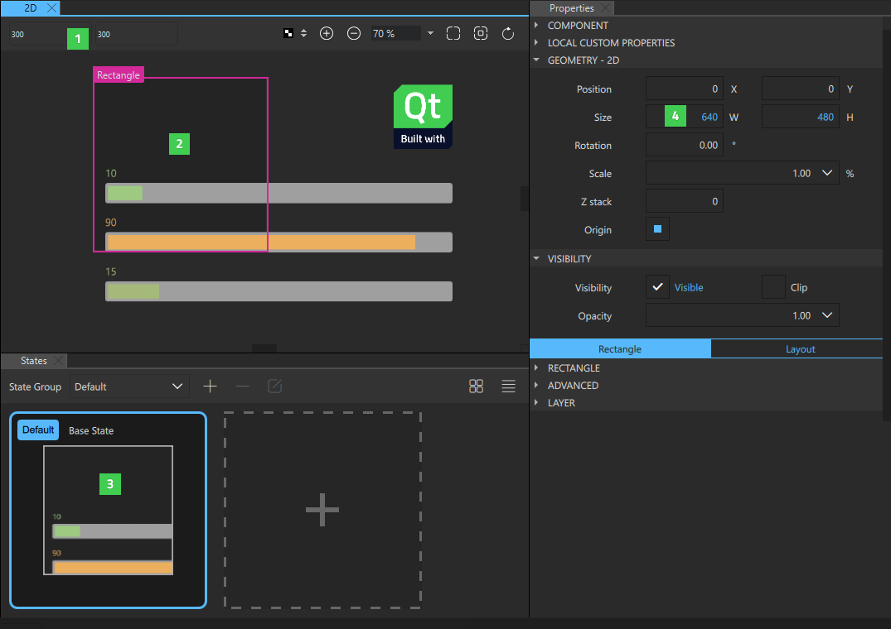
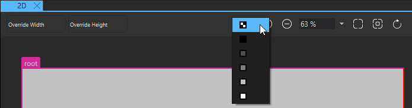

2D
You design applications in the 2D view by opening component files and placing instances of 2D components and assets into them.

When you select component instances in the 2D view, markers appear around their edges and in their corners. Depending on the shape of the cursor, you can apply the following actions to the component instances by dragging them:
Summary of 2D View Buttons
The 2D view toolbar contains the following buttons and fields.
| Button/Field | Tooltip | Read More |
|---|---|---|
| Override Width | Shows a preview of the component using the specified width. | Previewing Component Size |
| Override Height | Shows a preview of the component using the specified height. | Previewing Component Size |
| Sets the color of the 2D view working area. | Setting Canvas Color | |
 | Zooms in. | Zooming |
 | Zooms out. | Zooming |
| Zoom level | Sets the zoom level that you select from the list. | Zooming |
| Zooms to fit all content. | Zooming | |
| Zooms to fit the current selection. | Zooming | |
 | Refreshes the contents of the 2D view. | Refreshing 2D View Contents |
Moving Components
When the move cursor is displayed, you can move the selected component instance to any position in the 2D view.
For more information about alternative ways of positioning component instances in UIs, see Scalable Layouts.
Resizing 2D Components
When the resize cursor is displayed, you can drag the markers to resize component instances.

To have the resizing done from the center of the selected component instance rather than from its edges, press Alt (or Opt on macOS).
To preserve the image aspect ratio while resizing when using the corner markers, press Shift. This also works on component instances that are anchored using left, right, top, or bottom anchors.
To both resize from the center of the component instance and preserve the aspect ratio, press Alt+Shift (or Opt+Shift on macOS).
For more information about alternative ways to specify the size of a component or component instance in a UI, see 2D Geometry.
Rotating 2D Components
When the rotation cursor is displayed in one of the corners of a component instance, you can drag clockwise or counter-clockwise to freely rotate the component instance around its origin.

Additionally, press Shift or Alt (or Opt on macOS) to rotate component instances in steps of 5 or 45 degrees, respectively.
You can set the origin in Properties > Geometry - 2D > Origin. There, you can also enter the value of the Rotation property in degrees.
Zooming
You can use the zoom buttons on the toolbar to zoom into and out of the 2D view or select the zoom level as a percentage from a list. More buttons are availabe for zooming to fit all content in the view or zooming to fit the currently selected component instances.

Snapping to Parent and Sibling Components
You can use snapping to align component instances in the 2D view. With snapping turned on, all component instances snap to their parent and siblings. If you use snapping with anchors, anchors are created when you snap a component to another.
To turn on snapping, right-click in the 2D view and select Snapping > Snap with Anchors or Snap without Anchors.
Snapping lines automatically appear to help you position the component instances.
Choose Edit > Preferences > Qt Quick > Qt Quick Designer to specify settings for snapping. In the Parent component padding field, specify the distance in pixels between the parent and the snapping lines. In the Sibling component spacing field, specify the distance in pixels between siblings and the snapping lines.

The following image shows the snapping lines (1) when Parent component padding is set to 5 pixels.

For alternative ways of aligning and distributing component instances by using the Properties view, see Aligning and Distributing Components.
Hiding Component Boundaries
The 2D view displays the boundaries of component instances. To hide them, right-click in the 2D view and select Show Bounds from the context menu.
Previewing Component Size
The width and height of the root component in a UI file determine the size of the component. You can reuse components, such as buttons, in different sizes in other UI files and design UIs for use with different device profiles, screen resolution, or screen orientation. The component size might also be zero (0,0) if its final size is determined by property bindings.
To experiment with different component sizes, enter values in the Override Width and Override Height fields (1) on the toolbar. The changes are displayed in the 2D view (2) and in the States view (3), but the property values are not changed permanently in the UI file. You can permanently change the property values in the Properties view (4).

To set the initial size of the root component, select Edit > Preferences > Qt Quick > Qt Quick Designer and specify the component width and height in the Root Component Init Size group.
Specifying Canvas Size
To change the canvas size, select Edit > Preferences > Qt Quick > Qt Quick Designer and specify the canvas width and height in the Canvas group.
Setting Canvas Color
If you set the background of the root component transparent, the color of the working area can make it difficult to see the component instance you are working on. To make component instances more visible, you can select the canvas color in the list. By default, the color is transparent. Setting the canvas color does not affect the background color of your root component or component instances in any way.

Refreshing 2D View Contents
When you open a UI file, the component defined in the file and the component instances it contains are drawn in the 2D view. When you edit component instance properties in Properties, the code and its representation in the 2D view might get out of sync. For example, when you change the position of a component instance within a column or a row, the new position might not be displayed correctly in the 2D view.
To refresh the contents of the 2D view, press R or select the (Reset View) button.
Context Menu
The following table summarizes the Navigator and 2D views context menu items and provides links to more information about them.
| To Learn About | Go To |
|---|---|
| Arrange | Arranging Components |
| Edit | Showing and Hiding Components |
| Anchors | Setting Anchors and Margins |
| Group | Organizing Components |
| Position | Using Positioners |
| Layout | Using Layouts |
| Stacked Container | Lists and Other Data Models |
| Timeline | Creating a Timeline |
| Event List | Simulating Events |
| Edit Color | Editing Properties Inline |
| Edit Annotation | Annotating Designs |
| Merge File with Template | Merging Files with Templates |
| Move Component Instances into Separate Files | Turning Component Instances into Custom Components |
| Add New Signal Handler | Adding Signal Handlers |
| Go to Implementation | Using UI Files |
| Edit Component | Moving Within Components |